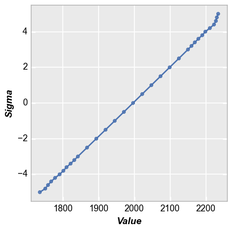

nq¶
- fcp.nq(**kwargs)¶
Plot the normal quantiles of a data set.
- Parameters
df (DataFrame | numpy array) – DataFrame containing a column of values data or a DataFrame or numpy array containing a set of 2D values that can be used to calculate quantiles at various “sigma” intervals
- Keyword Arguments
x (str) – x-axis column name (if using a 1D dataset). Defaults to None. More details
sigma (float) – Maximum sigma value to use for the calculation; range will be +/- this value. Defaults to Auto- calculated based on the dataset using “fcp.utilities.sigma”. More details
step_inner (float) – Delta between sigma values outside of the tail (around sigma=0). Defaults to 0.5. More details
step_tail (float) – Delta between sigma values in the tails (all value >= and <= to keyword “tail”). Defaults to 0.2. More details
tail (float) – Sigma value that represents the start of the tail of the distribution. Defaults to 3. More details
BASIC:
CALCULATION:
Examples
“Normal” distribution:
>>> import fivecentplots as fcp >>> from pathlib import Path >>> import pandas as pd >>> import numpy as np >>> # Make a normal distribution from noise >>> img = np.ones([1000, 1000]) * 2**12 / 2 >>> img += np.random.normal(-0.025*img.mean(), 0.025*img.mean(), img.shape) >>> fcp.nq(img, marker_size=4, line_width=2)
